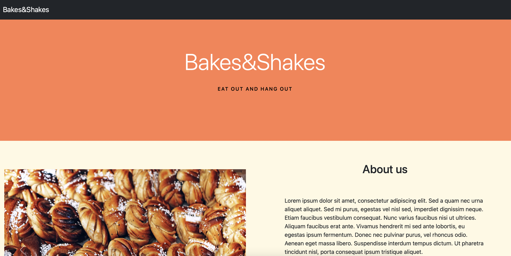
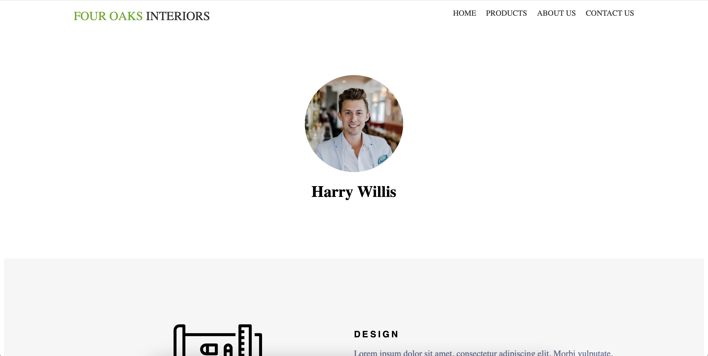

Decode Economics Website

Decode Economics' website was my first full, raw-code website. I build it pro-bono for a relative and it is fully functional though not yet live (they are in the process of finding a domain name). I first build the JavaScript with some help from a Udemy course but I fully understand it and have replicated the process in more recent projects. The web design was based on the client's drawings and requests.
Open
Bakes & Shakes Bootstrap Website
Bakes&Shakes is the first website I built using Bootstrap. I followed a tutorial to build this project so that I could get to grips with Bootstrap and I really enjoyed building with this library. This was also my first one-page website.
Open
Flexbox Home Page
My first experience using flexbox was this home page which I built by following a tutorial. I found the format relatively simple to use and I'm looking forward to implementing this new knowledge in furutre projects.
Open
Record Record C.R.U.D. App

This is a basic C.R.U.D. webpage for keeping track of your records. I copied the code structure from a tutorial and adapted it to suit my subject matter and needs.
Open
API Live Bitcoin Rates

This was the first fully independant API project which I really enjoyed building. I now feel more familliar and comfortable with API documentation and troubleshooting.
Open
API Weather App

This was my second time building an API website, I used the OpenWeather API to pull data and my code is is partly mine and partly immitation from my first API project.
Open
API Ghibli Website

This is my first basic API website which I built following a tutorial. This website takes data from the Studio Ghibli website's 'films' section and displays it in the DOM. I took time to make sure I understood the structure and elements of this project and I have made sure to reuse what I have learned here in other projects.
Open
Grade Checker

This is a tool for inputting a grade percentage and returning the equivalent university grade. This was my first independant JavaScript project that simply grabs a user input, performs a loop and returns a result.
Open
Percentage Calculator

I built this percentage calculator by following a tutorial when I first started to learn JavaScript.
Open
Photo Gallery with CSS Grids

This is a simple photo gallery I built to learn how to use CSS grids.
Open
Google Homepage Clone

This was my first HTML and CSS project. I made a lot of mistakes in this project which taught me the importance of the HTML structure for simple and responsive CSS. If I were to do this project again I would restructure the HTML so that I could style the individual elements without them affecting one another and I would build the elements with responsiveness in mind.